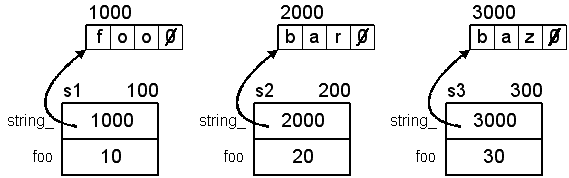
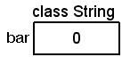

(Default behavior)
(This is what we want)


Default Class Behavior
We've been assigning StopWatch objects and initializing them without any regards to how this is done:The compiler made it for us.// Construction (conversion constructor) StopWatch sw1(60); // 00:01:00 // Initialization StopWatch sw2 = sw1; // 00:01:00 // Construction (default constructor) StopWatch sw3; // 00:00:00 // Assignment: sw3.operator=(sw1); // Where did this operator come from? sw3 = sw1; // 00:01:00
struct Foo
{
int a, b, c;
};
Foo f1 = {1, 2, 3}; // initialization
Foo f2 = f1; // initialization
Foo f3; // uninitialized
f3 = f1; // assignment
Foo& Foo::operator=(const Foo& rhs)
{
a = rhs.a;
b = rhs.b;
c = rhs.c;
return *this; // Allows chaining: f1 = f2 = f3 etc...
}
// Infix notation f3 = f1; // Functional notation f3.operator=(f1);
In addition to the default copy assignment operator, the compiler will also provide a default copy constructor. (Once again, another function will be called to help the compiler perform its job.)
Foo::Foo(const Foo& rhs) : a(rhs.a), b(rhs.b), c(rhs.c)
{
}
Foo f1; // default constructor Foo f2(f1); // copy constructor
| Pass by value | Return by value |
|---|---|
|
|
| Default constructor (does nothing) | Default destructor (does nothing) |
|---|---|
|
|
| Default copy assignment operator (memberwise assignment) | Default copy constructor (memberwise initialization) |
|
|
| Class definition | Some implementations |
|---|---|
|
|
void f6()
{
Student john("john", 20, 3, 3.10f);
Student billy("billy", 21, 2, 3.05f);
billy = john; // Assignment
}
Student constructor for john
Student constructor for billy
Student destructor for john
Student destructor for ,o턠,o턠?
22292 [sig] a 2032 open_stackdumpfile: Dumping stack trace to a.exe.stackdump
22292 [sig] a 2032 open_stackdumpfile: Dumping stack trace to a.exe.stackdump
742008 [sig] a 2032 E:\Data\Courses\Notes\CS170\Code\Classes3\a.exe: *** fatal error -
E:\Data\Courses\Notes\CS170\Code\Classes3\a.exe: *** called with threadlist_ix -1
Here's a graphic of the problem:
| Incorrect assignment behavior (shallow copy) (Default behavior) | Correct assignment behavior (deep copy) (This is what we want) |
|---|---|
|
|
|
The diagram shows the painful truth: The default copy assignment operator won't cut it. Also, the default copy constructor will have the same problem, so this code will also fail:
Student john("john", 20, 3, 3.10f);
// Copy constructor
Student billy(john);
A Proper Assignment Operator and Copy Constructor
Adding a copy assignment operator is no different than any other operator:
| Declaration | Implementation |
|---|---|
|
|
| Default copy assignment operator | Our correct and safe copy of login_ |
|---|---|
|
|
There is more work to be done. Many (if not all) new C++ programmers fall into this trap a lot:
| Sample code | Output |
|---|---|
|
Student constructor for jdoe Error in age range! Error in year range! Student constructor for Student operator= for ,o턠,o턠? Student destructor for Student destructor for ,o턠,o턠? |
An easy way to prevent this is to simply check first:
Student& Student::operator=(const Student& rhs)
{
// Check for self-assignment
if (&rhs != this)
{
set_login(rhs.login_);
set_age(rhs.age_);
set_year(rhs.year_);
set_GPA(rhs.GPA_);
}
return *this;
}
A similar problem exists with the default copy constructor:
| Client code | Default copy constructor |
|---|---|
|
|
| Declaration | Implementation (almost correct) |
|---|---|
|
|
Points:
| Private helper function | Calling the helper function |
|---|---|
|
|
void Student::set_login(const char* login)
{
// Delete "old" login (THIS IS A POTENTIAL PROBLEM)
delete [] login_;
// Allocate new one
int len = (int)std::strlen(login);
login_ = new char[len + 1];
std::strcpy(login_, login);
}
void Student::copy_data(const Student& rhs)
{
// What is the value of login_ when the constructors call this method?
set_login(rhs.login_);
set_age(rhs.age_);
set_year(rhs.year_);
set_GPA(rhs.GPA_);
}
| Setting login_ in the body | Using the member initializer list |
|---|---|
// Constructor
Student::Student(const char * login,
int age, int year,
float GPA)
{
login_ = 0;
set_login(login);
set_age(age);
set_year(year);
set_GPA(GPA);
}
// Explicit copy constructor
Student::Student(const Student& student)
{
login_ = 0;
copy_data(student);
}
|
|
|
As a rule, if you use new in your constructor, you will need to create
|
Creating a String Class
#include <iostream> // ostream
class String
{
public:
String(); // default constructor
String(const char *cstr); // conversion constructor
~String(); // destructor
// So we can use cout
friend std::ostream & operator<<(std::ostream &os, const String &str);
private:
char *string_; // the "real" string (A NUL terminated array of characters)
};
void f1()
{
String s("Hello");
std::cout << s << std::endl;
}
Implementations so far:Conversion constructor: Hello Hello Destructor: Hello
|
|
|
|
|
|
int main()
{
cout << "*** Start of main..." << endl;
String s("Newton");
cout << s << endl;
Create1();
String *ps = Create2();
cout << ps << endl; // what does this display?
cout << *ps << endl; // what does this display?
cout << global << endl;
delete ps;
cout << "*** End of main..." << endl;
return 0;
}
Notice the two different uses of new and delete in the program:Conversion constructor: Euclid *** Start of main... Conversion constructor: Newton Newton *** Start of Create1... Conversion constructor: Plato Plato *** End of Create1... Destructor: Plato *** Start of Create2... Conversion constructor: Pascal Pascal *** End of Create2... 0x653290 Pascal Euclid Destructor: Pascal *** End of main... Destructor: Newton Destructor: Euclid
At this point, we are missing quite a bit of functionality for a general purpose String class. What else could we add to it?
Fixing the String Class
Here's a program that "appears" to work, but then causes a big problem:
void foo()
{
String one("Pascal");
String two(one);
cout << one << endl;
cout << two << endl;
}
Pascal
Pascal
Destructor: Pascal
Destructor: ,o턠,o턠?
69 [sig] a 1864 open_stackdumpfile: Dumping stack trace to a.exe.stackdump
69 [sig] a 1864 open_stackdumpfile: Dumping stack trace to a.exe.stackdump
Here's another similar use of the class:
void PrintString(String s)
{
cout << s << endl;
}
void f3()
{
String str("Pascal");
PrintString(str);
}
Conversion constructor: Pascal
Pascal
Destructor: Pascal
Destructor: ,o턠,o턠?
63 [sig] a 836 open_stackdumpfile: Dumping stack trace to a.exe.stackdump
63 [sig] a 836 open_stackdumpfile: Dumping stack trace to a.exe.stackdump
1599112 [sig] a 836 E:\Data\Courses\Notes\CS170\Code\Classes3\a.exe: *** fatal error -
E:\Data\Courses\Notes\CS170\Code\Classes3\a.exe: *** called with threadlist_ix -1
What could possibly be causing this?
To help understand the problem, look at the difference between these functions:
void PrintString(String s) void PrintString(String &s) void PrintString(const String &s)
Finally, we have this that "appears" to work until it crashes:
void f5()
{
String one("Pascal");
String two;
two = one;
cout << one << endl;
cout << two << endl;
}
Conversion constructor: Pascal
Default constructor
Pascal
Pascal
Destructor: Pascal
Destructor: ,o턠,o턠?
64 [sig] a 1164 open_stackdumpfile: Dumping stack trace to a.exe.stackdump
64 [sig] a 1164 open_stackdumpfile: Dumping stack trace to a.exe.stackdump
1508162 [sig] a 1164 E:\Data\Courses\Notes\CS170\Code\Classes3\a.exe: *** fatal error -
E:\Data\Courses\Notes\CS170\Code\Classes3\a.exe: *** called with threadlist_ix -1
class String
{
public:
String(); // default constructor
String(const String& rhs); // copy constructor
String(const char *cstr); // conversion constructor
~String(); // destructor
// Copy assignment operator
String& operator=(const String& rhs);
// So we can use cout
friend std::ostream& operator<<(std::ostream& os, const String &str);
private:
char *string_; // the "real" string
};
|
|
| Copy test | Output |
|---|---|
|
Conversion constructor: Pascal Copy constructor: Pascal Pascal Pascal Destructor: Pascal Destructor: Pascal |
| Assignment test | Output |
|---|---|
|
Conversion constructor: Pascal Default constructor operator=: = Pascal Pascal Pascal Destructor: Pascal Destructor: Pascal |
Enhancing the String Class
There are many features and functions we could add to the String class to make it more useable.
| Declaration | Implementation |
|---|---|
|
|
| Test | Output |
|---|---|
|
Conversion constructor: Digipen Digipen Length of string: 7 Destructor: Digipen |
We need to include this:
#include <cctype> // islower, isupper
| Convert to uppercase | Convert to lowercase |
|---|---|
|
|
| Test | Output |
|---|---|
|
Conversion constructor: Digipen Digipen digipen DIGIPEN Destructor: DIGIPEN |
void f3()
{
String s1("One");
String s2("Two");
if (s1 < s2)
std::cout << s1 << " is before " << s2 << std::endl;
else
std::cout << s1 << " is not before " << s2 << std::endl;
if (s2 < s1)
std::cout << s2 << " is before " << s1 << std::endl;
else
std::cout << s2 << " is not before " << s1 << std::endl;
if (s1 < s1)
std::cout << s1 << " is before " << s1 << std::endl;
else
std::cout << s1 << " is not before " << s1 << std::endl;
}
Declaration in the String class:Conversion constructor: One Conversion constructor: Two One is before Two Two is not before One One is not before One Destructor: Two Destructor: One
Implementation:bool operator<(const String& rhs) const;
bool String::operator<(const String& rhs) const
{
// if we're 'less' than rhs
if (std::strcmp(string_, rhs.string_) < 0)
return true;
else
return false;
}
What about this?bool operator>(const String& rhs) const; bool operator==(const String& rhs) const; bool operator<=(const String& rhs) const; bool operator>=(const String& rhs) const; bool operator!=(const String& rhs) const; bool operator==(const String& rhs) const;
String s1("Digipen");
if (s1 < "Hello")
std::cout << "Hello is less" << std::endl;
else
std::cout << "Hello is NOT less" << std::endl;
Conversion constructor: Digipen Conversion constructor: Hello Destructor: Hello Destructor: Digipen
String s1("Digipen");
if ("Hello" < s1)
std::cout << "Hello is less" << std::endl;
else
std::cout << "Hello is NOT less" << std::endl;
In function 'void f4()':
error: no match for 'operator<' (operand types are 'const char [6]' and 'String')
if ("Hello" < s1)
^
if (String("Hello") < s1)
|
Conversion constructor: Digipen Conversion constructor: Hello Destructor: Hello Hello is NOT less Destructor: Digipen |
Now the user can compare Strings with NUL-terminated strings as easily as comparing two Strings. This is the whole point of overloading operators: Give the users the ability to work with user-defined types as naturally as they work with built-in types (e.g. integers).
Going one step further
It would be nice if we could directly compare a String with a NUL-terminated string without having to construct a temporary String first. We can do that if we can access the underlying NUL-terminated string. (Remember, the String class is just a wrapper around a C-style NUL-terminated string.)
// declare in public section of .h file const char *c_str() const; |
|
bool operator<(const char *lhs, const String& rhs)
{
return std::strcmp(lhs, rhs.c_str()) < 0;
}
String s1("Digipen");
if ("Hello" < s1)
std::cout << "Hello is less" << std::endl;
else
std::cout << "Hello is NOT less" << std::endl;
| New output | Old output |
|---|---|
Conversion constructor: Digipen Hello is NOT less Destructor: Digipen |
Conversion constructor: Digipen Conversion constructor: Hello Destructor: Hello Hello is NOT less Destructor: Digipen |
// optimization
bool String::operator<(const char *rhs) const
{
// if we're 'less' than rhs
if (std::strcmp(string_, rhs) < 0)
return true;
else
return false;
}
bool operator<(const char *lhs, const String& rhs) // global, e.g. "Hello" < s1 bool String::operator<(const String& rhs) const // member, e.g. s1 < s2 bool String::operator<(const char *rhs) const // member, e.g. s1 < "Hello"
More Enhancements to the String Class
There is an obvious feature that is missing from the String class: subscripting. We should be able to do this:
String s1("Digipen");
// c should have the value 'g'
char c = s1[2];
| Declaration | Implementation |
|---|---|
|
|
| Sample usage | Output |
|---|---|
|
D i g i p e n |
char String::operator[](int index) const
{
// Validate the index
if ( (index >= 0) && (index < size()) )
return string_[index];
else
return string_[0]; // What to return??? This is a BIG problem
// that we'll postpone for now. (EH)
}
| Compiler error: | |
|---|---|
|
error: non-lvalue in assignment <----- can't assign to a temporary value |
| Return a reference | Compiles and runs |
|---|---|
|
Output: Cello |
| Try a const object | Compiles and runs fine |
|---|---|
|
D i g i p e n |
| Modify const object | No problemo |
|---|---|
|
Output: Cello |
| Return a const reference | Compiler error as expected |
|---|---|
|
|
void f4()
{
String s1("Hello");
// Compiler error: assignment of read-only location
s1[0] = 'C';
std::cout << s1 << std::endl;
}
void f7()
{
String s1("Hello"); // non-const object
const String s2("Goodbye"); // const object
// non-const: This should be allowed
s1[0] = 'C';
// const: This should produce an error
s2[0] = 'F';
}
const char& operator[](int index) const; // for r-values
char& operator[](int index) const; // for l-values
|
|
They are both const methods, since neither one is modifying the private fields.
One returns a const reference and the other returns a non-const reference.
The proper way:
const char& operator[](int index) const; // for r-values
char& operator[](int index); // for l-values
Example code now works as expected:The const at the end is part of the method's signature and the compiler uses it to distinguish between the two methods.
void f8()
{
String s1("Hello"); // non-const object
const String s2("Goodbye"); // const object
// Calls non-const version, l-value assignment (write) is OK
s1[0] = 'C';
// Calls const version, l-value assignment (write) is an error
//s2[0] = 'F';
// Calls non-const version, r-value read is OK
char c1 = s1[0];
// Calls const version, r-value read is OK
char c2 = s2[0];
}
Class Methods and static Members
Suppose we add a public data member to the String class:
class String
{
public:
// Other public members...
int foo; // public data member
private:
char *string_; // the "real" string
};
| Test code | Output |
|---|---|
|
Conversion constructor: foo Conversion constructor: bar Conversion constructor: baz 10 20 30 Destructor: baz Destructor: bar Destructor: foo |
|
Conversion constructor: foo Conversion constructor: bar Conversion constructor: baz 1627408208 4268368 4268368 Destructor: baz Destructor: bar Destructor: foo |
So this code:
String s1("foo");
String s2("bar");
String s3("baz");
s1.foo = 10;
s2.foo = 20;
s3.foo = 30;
We must always initialize any non-static data in the class, otherwise it's undefined. Non-static? As opposed to what? Static?
By default, members of a class are non-static. If you want them to be static, you must indicate it with the static keyword.
Unfortunately, the meaning of static is completely different from the other meanings we've learned.
class String
{
public:
// Other public members...
int foo; // non-static
static int bar; // static
private:
char *string_; // the "real" string
};
// Accessing a static member with the scope resolution operator int i = String::bar; std::cout << i << std::endl;
| Header file (.h) | Implementation file (.cpp) |
|---|---|
|
|
Note that you must do it this way:/cygdrive/h/temp/ccZm55jF.o:main.cpp:(.text+0xf8d): undefined reference to 'String::bar' collect2: ld returned 1 exit status
Just doing this:int String::bar = 0; // Need the leading int keyword (It's a definition)
is simply assigning a new value to String::bar.String::bar = 0; // Assignment
Each object has a separate storage area for foo, but bar is shared between them:

Note: Static data members are NOT counted with the sizeof operator. Only non-static data is included. This is true when using sizeof with either the class itself, or objects of the class.
Methods can be static as well:
| Declarations | Definitions |
|---|---|
|
|
void f8()
{
// Accessing a static member
int i = String::get_bar();
// Error, private now
i = String::bar;
}
void f9()
{
String s1("foo");
int x = s1.get_bar(); // Access through object
int y = String::get_bar(); // Access through class
}
class String
{
public:
// Other public members...
// can be initialized in the class
const static int foo = 47;
private:
// Other private members...
// can be initialized in the class
const static char bar = 'B';
};
Example
Suppose we want to keep track of how many String objects were created, how many total bytes were allocated, and how many Strings are currently active? This is a good candidate for static members.This is what the updated String class looks like:
class String
{
public:
String(); // default constructor
String(const String& rhs); // copy constructor
String(const char *cstr); // conversion constructor
~String(); // destructor
// Copy assignment operator
String& operator=(const String& rhs);
static int created_; // Total number of Strings constructed
static int alive_; // Total number of Strings still around
static int bytes_used_; // Total bytes allocated for all Strings
// Other public members
private:
char *string_; // the "real" string
// Other private members
};
Updated member functions:// Define and initialize the static members int String::bytes_used_ = 0; int String::created_ = 0; int String::alive_ = 0;
Sample test program:
Default constructor Conversion Constructor String::String() { // Allocate minimal space string_ = new char[1]; string_[0] = 0; bytes_used_ += 1; created_++; alive_++; #ifdef PRINT std::cout << "Default constructor" << std::endl; #endif }String::String(const char *cstr) { // Allocate space and copy int len = (int)strlen(cstr); string_ = new char[len + 1]; std::strcpy(string_, cstr); bytes_used_ += len + 1; created_++; alive_++; #ifdef PRINT std::cout << "Conversion constructor: " << cstr << std::endl; #endif }Destructor Copy Constructor String::~String() { #ifdef PRINT std::cout << "Destructor: " << string_ << std::endl; #endif delete [] string_; // release the memory alive_--; }String::String(const String& rhs) { int len = (int)strlen(rhs.string_); string_ = new char[len + 1]; std::strcpy(string_, rhs.string_); bytes_used_ += len + 1; created_++; alive_++; #ifdef PRINT std::cout << "Copy constructor: " << rhs.string_ << std::endl; #endif }
Copy assignment operator String& String::operator=(const String& rhs) { #ifdef PRINT std::cout << "operator=: " << string_ << " = " << rhs.string_ << std::endl; #endif if (&rhs != this) { delete [] string_; int len = (int)strlen(rhs.string_); string_ = new char[len + 1]; std::strcpy(string_, rhs.string_); bytes_used_ += len + 1; } return *this; }
#include <iostream> // cout, endl
#include "String.h" // String class
// Print static data
void print_stats()
{
std::cout << "Strings created: " << String::created_ << ", ";
std::cout << "Bytes used: " << String::bytes_used_ << ", ";
std::cout << "Strings alive: " << String::alive_ << std::endl;
}
// Pass a copy, return a copy
String pass_by_val(String s)
{
return s; // return a copy
}
// Pass a reference, return a reference
const String& pass_by_ref(const String& s)
{
return s; // return a reference
}
void f1()
{
String s1("Hello");
print_stats(); // Strings created: 1, Bytes used: 6, Strings alive: 1
String s2(s1);
print_stats(); // Strings created: 2, Bytes used: 12, Strings alive: 2
pass_by_val(s1);
print_stats(); // Strings created: 4, Bytes used: 24, Strings alive: 2
pass_by_ref(s1);
print_stats(); // Strings created: 4, Bytes used: 24, Strings alive: 2
s1 = "Goodbye";
print_stats(); // Strings created: 5, Bytes used: 40, Strings alive: 2
s2 = s1;
print_stats(); // Strings created: 5, Bytes used: 48, Strings alive: 2
String s3;
print_stats(); // Strings created: 6, Bytes used: 49, Strings alive: 3
}
int main()
{
print_stats(); // Strings created: 0, Bytes used: 0, Strings alive: 0
f1();
print_stats(); // Strings created: 6, Bytes used: 49, Strings alive: 0
}
Output: (with PRINT defined)Strings created: 0, Bytes used: 0, Strings alive: 0 Strings created: 1, Bytes used: 6, Strings alive: 1 Strings created: 2, Bytes used: 12, Strings alive: 2 Strings created: 4, Bytes used: 24, Strings alive: 2 Strings created: 4, Bytes used: 24, Strings alive: 2 Strings created: 5, Bytes used: 40, Strings alive: 2 Strings created: 5, Bytes used: 48, Strings alive: 2 Strings created: 6, Bytes used: 49, Strings alive: 3 Strings created: 6, Bytes used: 49, Strings alive: 0
Strings created: 0, Bytes used: 0, Strings alive: 0 Conversion constructor: Hello Strings created: 1, Bytes used: 6, Strings alive: 1 Copy constructor: Hello Strings created: 2, Bytes used: 12, Strings alive: 2 Copy constructor: Hello Copy constructor: Hello Destructor: Hello Destructor: Hello Strings created: 4, Bytes used: 24, Strings alive: 2 Strings created: 4, Bytes used: 24, Strings alive: 2 Conversion constructor: Goodbye operator=: Hello = Goodbye Destructor: Goodbye Strings created: 5, Bytes used: 40, Strings alive: 2 operator=: Hello = Goodbye Strings created: 5, Bytes used: 48, Strings alive: 2 Default constructor Strings created: 6, Bytes used: 49, Strings alive: 3 Destructor: Destructor: Goodbye Destructor: Goodbye Strings created: 6, Bytes used: 49, Strings alive: 0